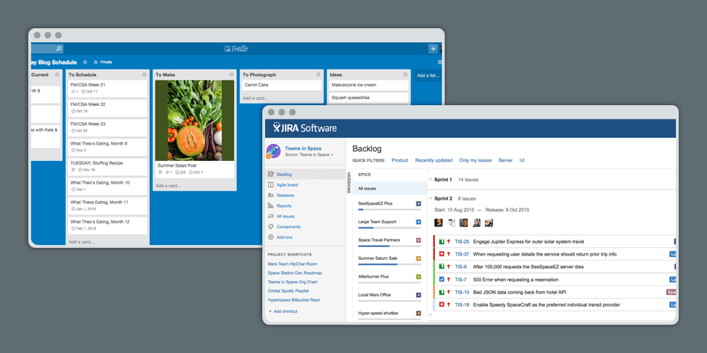
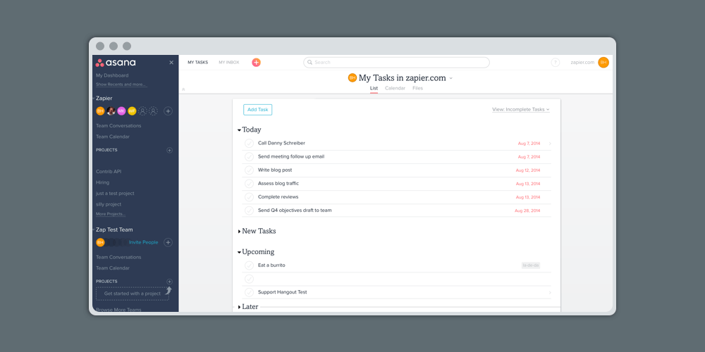
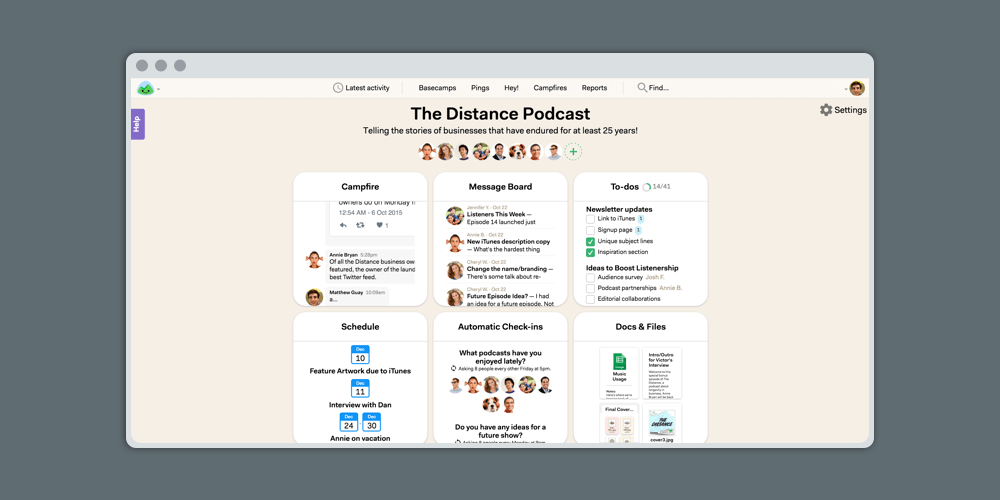
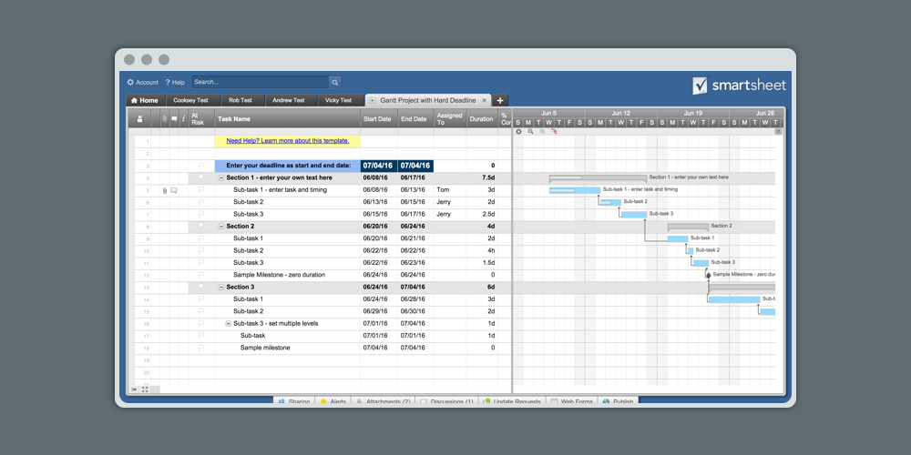
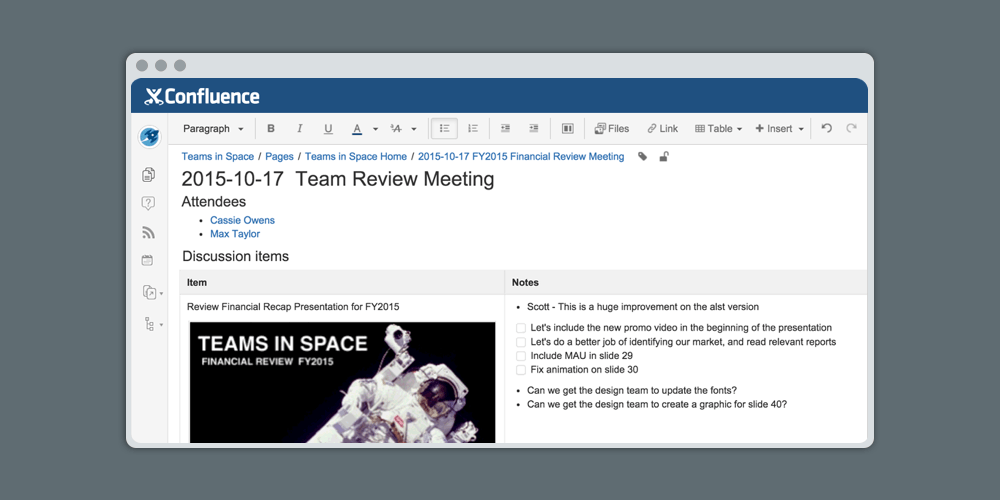

You thought committing to a to-do app was tough? Try getting your entire team on-board with a single project management solution, and convincing them to stick with it over the course of a major project.
That’s the challenge when hunting for project management software: You need to find a tool with the powerful features you need, and get buy-in from your coworkers. It’s a daunting task.
To take some sting out of the process, we asked the experts for their tips on picking the best project management app. According to Martin Müntzing, head of product at Podio, good project management software is “any tool that aligns with how you best execute projects your own way is best.”
So where should you start to find a tool like that? Niki Gallo Hammond, a senior project manager with technology firm Jackson River, suggests identifying your challenges and constraints.
“Are you looking for something to help organize assets?” says Hammond. “Something to facilitate more fluid communication between team members or clients and vendors? Something that can support complicated scheduling or budget tracking?” List those answers, and find the app that matches them for the perfect project tool.
But instead of bogging yourself down with an endless list of questions, try this five-step process instead, built on advice that we gathered from five project management experts.
Does this tool give my team the tools and flexibility to work together?
If you’re investing in new software—instead of just using the personal apps you use for your own tasks—you’ll likely also want to use it with the whole team. The software you choose should be collaboration-friendly in a way that meets your needs.
“I geek out on my own with a lot of tools, but only a few actually have an incremental benefit that’s worth the cost of switching with a multi-person team,” says Paul Cothenet, who has worked as a product manager at a venture-backed startup for five years, and is now the CTO of MadKudu, an analytics company.
Try picking something that fits the way your team already communicates and works. Post-it Note-covered whiteboards are a staple in many offices, for example. But for dispersed teams, Cothenet suggests Trello as a web-based alternative. Once you hit three or more separate teams within the company, try something meatier like JIRA.

Cothenet also suggests test-driving a tool’s collaborative features with a small, committed group within your team. This kind of pilot program will likely uncover some of the issues and benefits that will only show up at scale.
For Müntzing’s team, transparency is a key part of collaboration. And working at Podio has only made him appreciate the platform’s function more.
“Podio allows me to structure my work—all work, really—that my team is involved in, in a way that enables full transparency to the rest of the organization,” he says. “The way we choose to implement that is to enforce openness and engagement from all employees, encouraging everyone to chip in with suggestions, share subject knowledge, and voice opinions early and often. That’s what we’ve found generates the most value for the team as well as our product users.”
Start out your research for the best tool for your team with Zapier’s roundup of 50 Best Project Management Apps—including a comparison spreadsheet where you can sort apps based on twenty top features.
“The biggest mistake you can make with productivity software is to add five minutes of extra work to each member of your team to save you five minutes.” - Paul Cothenet, CTO at MadKudo
Do the productivity benefits of this tool outweigh the time and money we’ll spend on it?
In the short-term, introducing new project management software to your workflow will cost a lot of time and money. But finding the right solution makes projects exponentially easier, making the software pay for itself.
Before you dive into a new tool, weigh the cost consider the time and money you’ll spend on the software.
Hammond says that when it comes down to dollars and cents, the variance is huge: Some enterprise solutions can cost hundreds of thousands of dollars to implement throughout a company, while other teams get by with $50-per-month online tools.
“Rather than aiming for a particular number, I think it’s important to research the landscape of products available to meet your needs, and compare the cost of buying and implementing the software versus the cost of not having it,” Hammond says. “Factor in the time you’ll save, errors avoided, and opportunities previously missed.”
Müntzing tries to price software at less than the sum of the value it provides, or the sum of the licenses of other products it replaces.
“Someone has to be able to provide a total-cost-of-ownership calculation that proves that investing in this software saves your organization money,” he says. “Freemium products allow a way to try the product without any up-front commitment, and that’s great, but the ROI still has to be there.”
If your choices aren’t dictated by budget, let convenience reign. “Is this something that is going to automate a part of my workflow or make my life easier? If so, I’ll use it,” says Johan Lieu, a product manager for Wufoo.
To gauge whether a software’s cost will provide well-rounded benefits for your team’s various needs, test it on small scale.
“The biggest mistake you can make with productivity software is to add five minutes of extra work to each member of your team to save you five minutes,” Cothenet says. “Always wait as long as you possibly can before introducing extra complexity.”
For Cothenet’s current three-person team, all he really wants is status reminders with a description; anything else would be a waste of effort.
“But when I was working with 20 engineers, I needed the bug reports to include a certain number of details. Otherwise, everyone would lose a ton of time trying to reproduce it,” he says.
Use the simplest system until it’s clear you’ve outgrown it, don’t use project management software that takes more than 30 minutes to set up, and sell the new tool to your team.
“Show the value, do demos, help people get started,” Cothenet says. “And most importantly, lead by example.”
“I simply don’t trust any software company that won’t let me use the full software package for a specific free trial period. … I want to kick the tires. Hard.” > - Heather Hendricks, Freelance Project Manager
Does this tool meet my needs better than the alternatives?
Choosing project management software is like apartment hunting: it’s tempting to jump on the first great place you walk into. Once you’re moved in, you see the flaws.
Fortunately, with project management software, you can sample a bit of everything before writing the first rent check.
When hunting for new software, think about what it would take to learn the new system, and whether or not the benefits of your current software remain in place.
“For me, the software evaluation process often starts with a least-resistance approach, looking at current team behavior, allowing a freedom of choice as a starting point,” Müntzing says. “If that proves the current software of choice is not sufficient for process needs, my first choice would be to look for connectivity and integrations to more full-featured products.”
If upgrading the current tool fails, Müntzing starts the top-down approach, surveying managers and stakeholders about their requirements for new solutions.
A great way to try out different options at little to no cost is simply to use the free trial, or ask the provider for access. More often than not, software providers are happy to hook you up with a short trial or training session.
“Personally, I often look for a low-to-no barrier to get started—free or no-credit card trial—and a pricing model that allows me to predict what it would take to scale my investment. From there on it’s all about experimentation,” Müntzing says.
If you’re serious about a big switch, freelance project manager Heather Hendricks warns against settling for software without a full-featured trial.
“I simply don’t trust any software company that won’t let me use the full software package for a specific free trial period,” she says. “As project managers, we have a lot on the line if we endorse a platform that ends up being the wrong choice. I want to kick the tires. Hard. I want other people on my team to test it.”
“Seeing a demo is simply not the same as exploring the software freely and unrestricted for a few weeks,” Hendricks says. “Sales people that encourage this unhindered access are the ones that I trust.”
But even with an in-depth look at the program, it’s important to examine what it offers in its leanest version. Determine if the extras are just that: extras. Bells and whistles aside, stellar project management tech will do everything you need it to in its simplest form.
Hammond suggests looking for a user interface that’s intuitive and allows you to perform common tasks without complex workflows. Also look for advanced search options, reporting, an emphasis on customization, and connectivity.
“It should play well with others,” Hammond says. “It’s typical to use different systems for requirements management, scheduling, bug reporting, and accounting, but to manage a project strategically and be able to predict and address risks, you’ll need a holistic, summary view of all of those things periodically.”
Tip: For project management app integrations, rely on Zapier, a tool that connects more than 500 apps.
“I sign up for something and then use it exclusively for a couple of days for the task it was built for. If it’s better than what I was using previously, it wins. If not, I’ll go back.” - Johan Lieu, Product Manager at Wufoo
Is this something that my team will actually use? Does it solve their problems?
When you start testing a new tool, you’re more likely to get feedback (with less frustration) if you let your team dip their toes in the water, rather than dunking them in the pool.
“Just be quick and simple about it,” Lieu says. “Don’t get caught up in overly customizing something that may not add value to your workflow. I sign up for something and then use it exclusively for a couple of days for the task it was built for. If it’s better than what I was using previously, it wins. If not, I’ll go back.”
Cothenet says the most common challenge you can expect during a trial period is team inertia. Make sure the trial period is short enough that it’s reversible, but long enough to suss out any deal-breakers.
Henricks’ test criteria is simple: “Would it take more than 15 minutes to show a relatively smart person how to use this?” she says. “It’s the platforms that can be utilized almost immediately by new users that get my attention.”
Hammond says that while it’s tempting to download tools and play around with them, you should always have a plan for how it fits into your workflow, and agree upon goals with your team.
And after you’ve made a decision that’s based on team feedback, usage and adoption, Cothenet suggests re-evaluating your decision often—about every three months.
“If the project manager is the only person who ever touches the project management software, it’s probably not being used to its full potential and has a high risk of failure or abandonment.” - Niki Gallo Hammond, Senior Project Manager at Jackson River
How can I help my team use this new tool?
Even tech-savvy teams are creatures of habit, so it’s important to draw up a plan for how you’ll integrate the new software into your daily workflow.
Off the bat, Hendricks only trains the stakeholder on what’s absolutely necessary for their role. If they only need to sign in and reply to comments from their teammates, that’s the extent of the training she provides. Once they feel comfortable, they can start to explore.
Then, after outlining an implementation plan, make sure you have the tools to execute on it—integrations to connect with old software, documentation on how you plan to implement the app, and more.
“Get your ducks in a row process-wise before you implement new software,” Hammond says. “Some people’s day-to-day tasks will change, or information they used to find one place will now be in another place. Prepare everyone for those changes in advance.”
But sometimes, it’s as simple as getting people to give the new tool a spin. “If the project manager is the only person who ever touches the project management software, it’s probably not being used to its full potential and has a high risk of failure or abandonment,” Hammond says.
Now it’s time to start looking for the perfect app for your team. We asked our panel of project managers what project management software they recommend, to help jump-start your search:

Paul Cothenet, who has worked as a product manager at a venture-backed startup for five years, and is now the CTO of MadKudu, an analytics company, recommends Asana for managing a team’s technical backlog and time-sensitive tasks.
Related: Read our review of Asana.

Heather Hendricks, a freelance senior digital project manager whose experience includes seven years in project management at Microsoft, recommends Basecamp. “Its beauty is in its simplicity,” she says. “I don’t like to overwhelm my teams with files, emails, spreadsheets and other project detritus that impacts their ability to focus. Basecamp offers a slick interface that doesn’t try to win the user over with bloated features. It does the most critical collaboration tasks really well—project communication, file sharing, project timelines and multi-project integration. It’s like the calm in the storm.”
Related: Read our review of Basecamp 3.

Niki Gallo Hammond, a senior project manager with technology firm Jackson River relies on Smartsheet, a flexible tool for project management with Gantt charts, schedules, to-do lists, inventories, and other spreadsheet-based references.
“It comes with a ton of templates that I’ve used and modified heavily, and it’s web-based so it’s great for collaboration,” she says. “It’s flexible, and simple enough to be useful for small teams and solo projects, but powerful and collaborative enough to support medium-to-large ones.”
Related: Read our review of Smartsheet.

Johan Lieu, a product manager for Wufoo, employs Confluence for tech and product specs. Confluence helps teams plan and organize projects, then weaves together collaboration and documentation tools to help them execute. It’s a hub for all of your team’s most important work, and best of all it’s simple to pick up.
We’re app nerds at Zapier. Our team is always on the hunt for the most compelling and most powerful tools on the market. And as we put them through the ringer, we make it a point to share the features and flaws that we find.
If you want to hear about the outstanding apps that we come across—for project management or otherwise—check out our app reviews. We put apps to the test so you don’t have to, covering key features, pricing, use cases and competitors in an easy-to-digest format.
Not sure where to start your search for a project management platform? Here are some other favorites from our panel—and be sure to jump back to Chapter 5 for other great options:
Still haven’t found the app for your team? Check out our other project management app reviews, or subscribe to our app reviews emails to get our latest app reviews—including reviews of the best new project management apps—in your inbox each Monday morning.
Let’s be honest: None of these project management tools can tackle everything you need to do at work. Sometimes it’s better to rope in software that handles a specific part of your workflow masterfully.
For everything in-between, our project management experts suggested these tools:
Still having trouble deciding which app to use for your projects? Maybe that’s the problem. You might need apps instead of just one app.
Most teams end up with an entire project management toolkit, a set of apps that work together to juggle their projects. In the next chapter, we’ll look at 13 team’s project stacks to help you figure out which apps you could use together in your projects.
Enjoy this chapter? Read it online or share it at https://zapier.com/learn/ultimate-guide-to-project-management/how-to-choose-project-management-software/.
Written by freelance writer Jane Callahan.